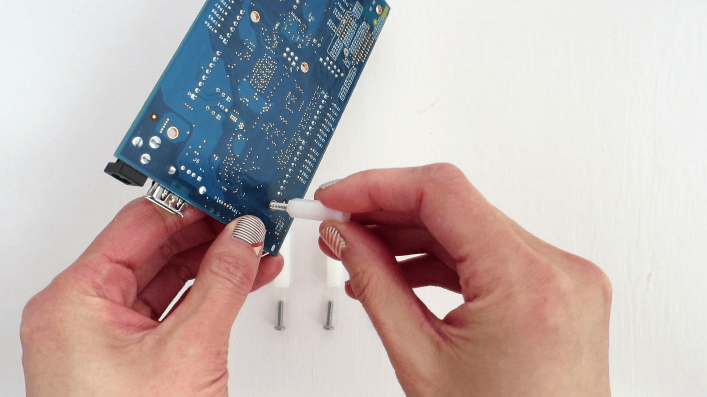

Install the plastic spacers
To add stability to the expansion board and to help avoid accidental short circuits, attach the four plastic spacers supplied in your Intel® Edison box to act as “legs” for the expansion board.

-
Locate the four metal screws and four plastic spacers in the Intel® Edison Kit for Arduino box.

-
In one of the four holes in the corner of the Arduino expansion board, insert a screw through the top.
-
Twist and tighten one of the white plastic spacers onto the screw. The spacer should be on the bottom of the expansion board to act as legs.
 -
Repeat for the remaining three screws and spacers.

Done!